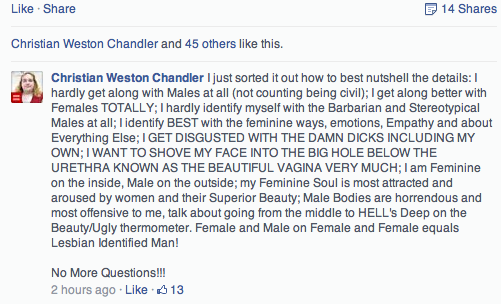

< < < Back
4 Strategies For Teaching Game To Autistic Men – Return Of Kings
Many newcomers to the art of the game assume that only skinny beta males and obese agoraphobic nerds suffer the consequences of taking the blue pill, but these are merely the most obvious and easily-ridiculed of the emasculated. Thanks to postmodern indoctrination, you can find men in serious need of the red pill from the corporate executive’s office to the janitor’s closet in the same building.
Recently, I took a sabbatical from writing articles and decided to apply the knowledge and themes of my work by volunteering in my local community. The young people who needed my help the most weren’t the psychologically normal kids of wealthy professionals who can afford to fritter cash on self-help scams or pass their hellion on to a boot camp for reform. There are some seriously under-appreciated kids on the fringes of the manosphere who get lumped in with Adam Lanza, Elliot Rodgers, and others of that nature. A large part of this demographic’s failures to launch and grow stems from no mentor taking the time even try and pill them.
I don’t mean to imply for a second that a little game and some incisive reactionary talking points would end shooting sprees by the neurologically atypical, yet we see plenty of their less extreme cousins waddling to the checkout counter at Wal-Mart with armfuls of My Little Pony merchandise. The more extreme of those are probably the urban transsexuals. Most of these autistic male-to-female transsexuals are self-diagnosed in the manner of betas with internet Asperger’s Syndrome and, instead of gender dysphoria, have just had overbearing mothers and imitate that gender role.
These individuals recognize that being a woman is less socially and culturally demanding than being a man.Their effeminate qualities become amplified by the female domination of virtually all careers in services used to help the autistic cope with ordinary society (speech therapists, special education teachers, etc.). The estrogen saturation of these fields means that even autistics without the transsexual delusion have no idea how most women behave or what they expect of a man.
Searching for a behavioral code, male kids with autism soak up the pleasant, idealized utopian principles of modernist chivalry that would only work (partially) in America before the late 1950s. Consider how many young autistic guys try to emulate the dated fashion of the Hollywood Golden Age by wearing trench coats and fedoras with tweed slacks. It’s a sadly earnest effort borne of a desire to emulate a type of classy masculinity in the mode of Humphrey Bogart that a shrinking minority of women claim represents the “real” man.
Unfortunately the feminist institutions have neutered us neurotypicals (neologism for people without autism), but these guys are even worse off. If we’re hobbled, then they’re amputees. In this article, I outline the four things that autistic young men need to do if they want to implant those prosthetic blades and run in the marathon.
Mother Complex
I arrived on-site for the first day of volunteering with high-functioning autistic teenagers with one of my side pieces. The young chirpy women who coordinated the volunteers gave me a clear look saying that I didn’t belong. The kids stared at me like I was living their dreams, and you wouldn’t be able to tell these kids had disabilities until engaging in conversation. I arrived 10 minutes earlier than planned, so I told my sidepiece that she could leave while I chatted up the teens.
I broke the ice with one of the bigger teenagers glued to his laptop. No sooner than I’d uttered “Hello,” did an older woman pop into view and start talking in his place. She introduces herself as the boy’s,—who I’ll refer to as “X”—mother and speaks for her son over a full 5-minute discussion about the program. X wouldn’t come out of his shell until I opened it with a little applied game, since techniques we use to try to bang chicks can easily be adapted to for male-to-male conversation.
X badgered me for easy answers to questions about dating, life as an independent, and what I thought about “bronies.” I switched the topic straight to the chase: Telling the kid that momma has his best interests at heart, but she cannot be his spokesperson. This is the first and maybe most crippling mistake of autistic youths. They and their mothers form a codependent relationship, wherein mommy keeps running their lives well into early adulthood in return for never going through Empty Nest Syndrome. Autistic guys must realize that women are not attracted to a dependent man who can’t take lead them, and that goes double for men ruled by their mothers.
Nurturing Woman Complex
After a few days I settled into the routines of the program, and had my epiphany that the majority of people who work with special needs clients are women. Everything from remedial social skills therapy to the speech pathology is dispensed by college-indoctrinated younger women. It’s as if when these autistic boys are born they’re discharged right into a birthing pool saturated with blue pill solute. They are obliviously spoon-fed media and education (indoctrination) system propaganda for their developmental years, and from an early age expect that these educators will be their emotional tampon.
Even worse, their hyper-focused education pathway conditions them to think of the perfect woman as a surrogate mama, and these allegedly trained specialist ladies truly were kindly, maternal figures. The type of female that would spend years in college to teach in the hardest and least-appreciated field is definitely not representative of the average American woman, providing a poor template on which to base their future expectations of females in the wild.
For example, I slept with the “meanest” speech pathologist in the whole program and she made me breakfast in the morning. Contrary to that nurturing, reciprocating behavior, autistic men need to understand that a typical woman is emotionally extractive. A woman generally expels all her anxiety and delusion to the outer world; she doesn’t take it inside.That brings me to point #3.
Implanted Ideas/Patterns
Within a few weeks, chubby man “X” lost weight under my advice. While his parents and educators fed him loads of low-fat dessert foods hoping for miracles, I suggested that X make those sweets a weekly treat instead of a daily decadence. Normal people have a hard enough time avoiding these traps, and routinely accept ideas implanted by conventional wisdom and the popular media as incontrovertible.
Autism can make critical thinking about social trends about 200 times harder. Simple things like casual fashion perpetually block autistic men from easy pussy—imagine a guy who looks at things like fedoras, long coats, fingerless gloves, camouflage patterns, and other “cool” articles of clothing separately and assumes that mashing all of those things together will make an “ultra cool” outfit.
Many of those pictures floating around the internet making you cringe with secondhand embarrassment are of autistic subjects. The other problem exacerbating the autistic man’s quest for a lay is his dependency of routine and patterns. While autistic dudes never get tired of the predictable, and often fall back on tropes and archetypes apparent in fictional relationships, women frequently resent and outwardly disdain predictability in men. A lot of the guys in the program told me about waiting until the 3rd date to proposition a girl for sex, since she’d obviously feel obliged at that point.
This advice might have been applicable long ago, but awkwardly going through the motions of two dates to reach that mystified 3rd date instead of trying to bed the bitch on the 1st will cause her to label you a closeted gay shopping for a beard. Autistic guys need to learn basic flexibility and get comfortable questioning conventions and long-term habits. It’s axiomatic stuff you’ve likely heard a billion times before, but where has ignoring it gotten you?
Feminine Mannerisms

My previous two points touched on this, but it’s vital enough to warrant its own segment. The autistic guys I was working with, bluntly stated, had bitch tendencies. They cried over OKcupid rejections and posted logorrhea rants on Reddit about how women don’t return their affections. There’s still a misconception out there that autistic people have muted or deadened emotions like sociopaths, but the reality is that they’re usually just poor at communicating them. Give them internet access, though, and watch the melodrama and hysterics pour out.
This was the hardest thing to impress on my group because there aren’t many options for a red pill role model. Their fathers, if they were around, were probably crippled by beta male characteristics. I decided to look into the escapist media hobbies that many were so fond of, and picked out some of the anime I watched as a teen for fun. I tried likening certain red pill lessons to the stuff in Dragonball or Dragonball Z.
At this point in the article, you’re either dismissing me as an elaborate troll, or retracting whatever credibility you extended, but if you were around these teens then you’d understand that I simply couldn’t throw these boys into the deep end with RooshV and Frost right at the start.
A running theme in the anime marketed to boys (and popular with young men abroad) is that the heroes are altruistically-minded characters who work hard for their rewards. They embrace that lofty alpha male notion of meritorious achievement and being a provider. The heroes don’t bitch when they can’t beat the villain of the week, but rather train until they’re strong enough to win fairly. That’s a boiled-down version of what ROK wants to bring back to Western masculinity.
Teaching my program teens these essential skills has improved their prospects visibly. X, the fat kid on the laptop, lost 40 pounds in only 6 months. Afterwards I persuaded him to make a Tinder account for dating and less serious fun. Sure, he hasn’t been an alpha male Casanova, but for a kid to develop this much makes me proud and further validates the principles we adhere to at ROK.
It doesn’t hurt that I now have the plates of special education personal, which I’ll file under recompense. I decided to be a flexible human being and it paid off. Giving those amputees the prosthetic leg rejuvenated my outlook on life.
Read More: How Teaching English In China Can Improve Your Game


{kind=link}
{kind=link}
{kind=link}
{kind=link}